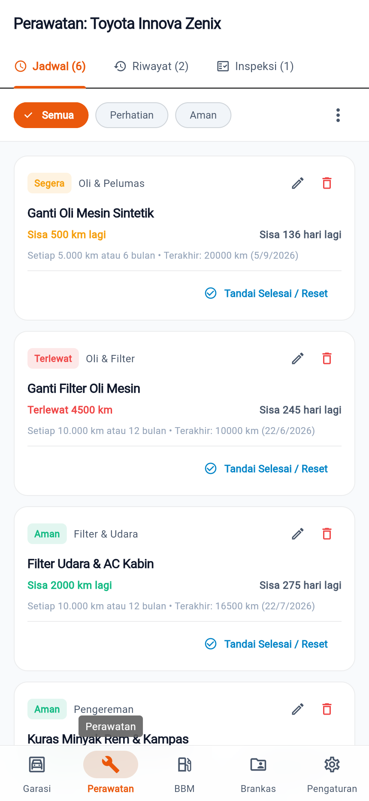
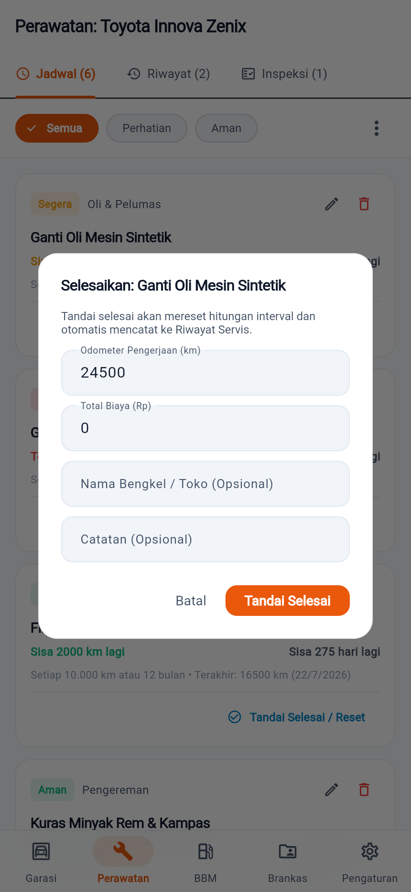
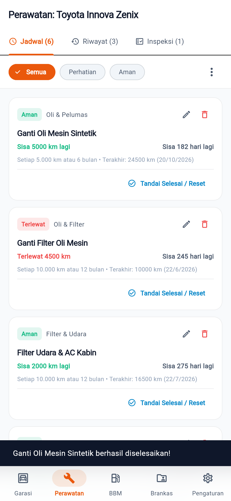
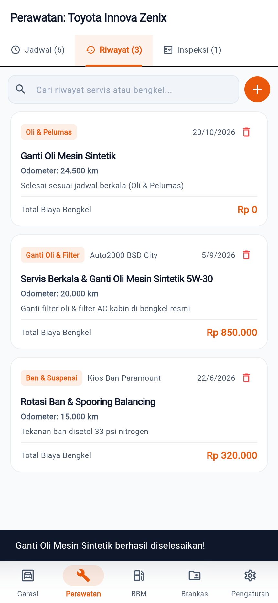

BAST garagego · BAST-FLOW-SRV-01
Mencatat servis dan memantau jadwal perawatan
FLOW-SRV-01ROL-001MOD-002EP-002US-002US-005FR-003FR-004
Pengguna membuka jadwal perawatan dua pemicu (km/bulan), menandai satu pekerjaan selesai, dan melihatnya tercatat di riwayat servis.
Langkah 1: Buka tab Perawatan
Ketuk tab Perawatan. Setiap jadwal berstatus Aman, Segera, atau Terlewat berdasarkan sisa km dan sisa hari.

Langkah 2: Tandai pekerjaan selesai
Ketuk Tandai Selesai / Reset pada Ganti Oli Mesin Sintetik. Dialog menjelaskan interval akan direset dan dicatat ke riwayat.

Langkah 3: Konfirmasi
Ketuk Tandai Selesai. Status jadwal kembali Aman dan odometer kendaraan diperbarui.

Langkah 4: Lihat riwayat servis
Buka sub-tab Riwayat: catatan servis baru tersimpan lengkap dengan tanggal, odometer, dan biaya.

Hasil uji
| TC | Jenis | Lapis | Skenario | Hasil |
|---|---|---|---|---|
FLOW-SRV-01-T01 | positive | unit | tandai jadwal selesai membuat log servis dan menaikkan odometer | pass |
FLOW-SRV-01-T02 | negative | unit | odometer mundur dari catatan sebelumnya dan biaya negatif ditolak | pass |
FLOW-SRV-01-T03 | edge | unit | batas urgensi: sisa 0 km terlewat, sisa 15% interval segera, 2.000.000 km maksimum | pass |
FLOW-SRV-01-T04 | corner | unit | log servis dengan odometer lebih rendah tidak menurunkan odometer; jadwal melewati tahun | pass |
FLOW-SRV-01-T05 | positive | unit | inspeksi menghitung persentase lolos dari butir tercentang | pass |
Direkam terhadap flutter build web (lokal) oleh FLOW-SRV-01-T01.